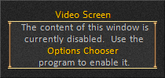

Video Screen
The Video Screen is a custom window that can be used to watch a movie or TV while in the game and performing mundane tasks like crafting.
The Video Screen window will appear when you click on the button labeled "Video" in the Main Menu or Command windows of the user interface.
The Video Screen feature works only in Windows XP and not in Vista. The window provides a "see through" screen that allows you to watch a video player that is open and running on your desktop in the background. It works by providing a sort of hole in the game so you can see whatever is on the video player on your desktop. There is no ability to control the video player and you can only view whatever is on the video player's screen.
This option is known to work with the Windows Media Player, Zoom Player, Win Amp, Power DVD, Real Player, Savvy TV, VideoLan Client (VLC), and KTV media players.
To use this window, switch to your desktop and start the video in one of the media players supported. Move the media player around on your desktop so the screen is where you want it to appear in the game. Switch to the game and open the Video Screen window. Insure the alpha level of the window is at 100% and that the screen selected supports the media player you are using. Move the screen so it appears over the media player and you can see the video. Resize the window as needed.
You may notice some jittering of the movie as it is being played. To reduce the jitter open the windows task manager and switch to the Processes tab. Find your media player in the list and right click on it to open a popup window. Use the Set Priority option to raise the priority of the media player so it gets more of your CPU time.
- Conceal
There is nothing shown when the window is concealed. The window is invisible with no graphics or controls to minimize the amount of memory used. Nothing will appear on the screen when you attempt to activate the window.
- Disable

Style 1
This single Video Screen window style supports the Windows Media Player, Zoom Player, Win Amp, Power DVD, Real Player, Savvy TV, VideoLan Client (VLC), and KTV media players.
Style 2
This single Video Screen window style supports the VideoLan Client (VLC) media player.
Style 3
This single Video Screen window style supports the KTV media player.
Style 4
This tabbed Video Screen window style has each of the three screens allowing it to support the Windows Media Player, Zoom Player, Win Amp, Power DVD, Real Player, Savvy TV, VideoLan Client (VLC), and KTV media players.